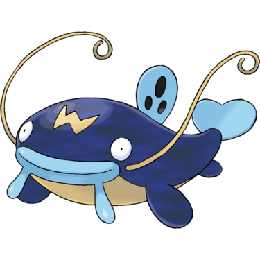
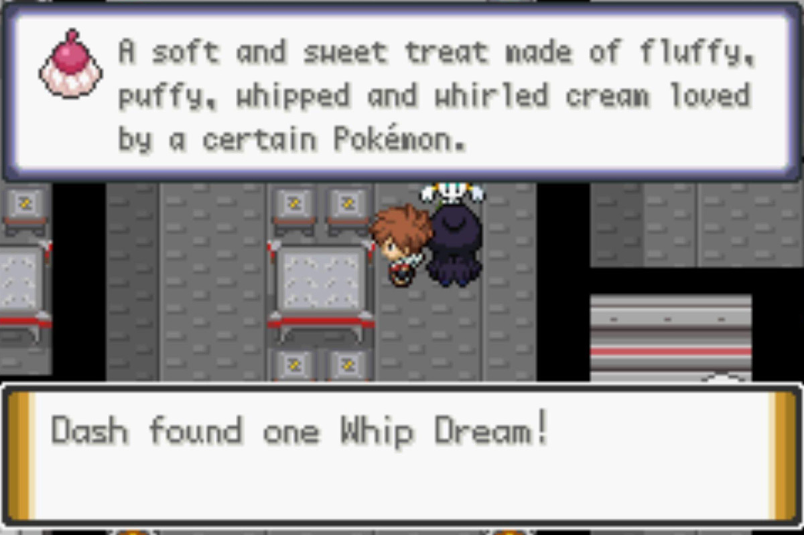
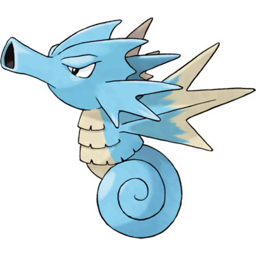
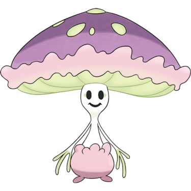
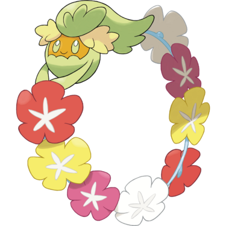

Quick Guide:
- Cross Vivill Woods and enter Vivill Town
- Raid the Vivill Warehouse
- Discover the Password and confront Aklove
- Escape the Distortion World
Vivill Woods
{kind=link}
| Points of Interest | |
|---|---|
 |
Bug Catcher Kent |
 |
Medium Hope |
 |
Bug Catcher Robby |
 |
Fungus Pokemon |
 |
Bug Maniac Keigo |
 |
Bug Catcher Elijah |
| Exits and Passages | |
|---|---|
 |
Gurun Town |
 |
Vivill Town |
Items
| Items | |
|---|---|
| Zygarde Cell | |
| Big Root | |
|
Big Mushroom (hidden) |
|
| Sun Stone | |
| TM81 X-Scissor | |
|
Tiny Mushroom (hidden) |
|
|
Big Mushroom (hidden) |
|
| PP Up | |
Wild Pokémon
| Wild Pokémon | |
|---|---|
| Long Grass | |
|
Wurmple Bug Day and Night |
|
|
Silcoon Bug Day and Night |
 |
|
Cascoon Bug Day and Night |
|
|
Scatterbug Bug Day and Night |
|
|
Spewpa Bug Day and Night |
|
|
Cottonee Grass/Fairy Day and Night |
 |
|
Swadloon Bug/Grass Day and Night |
 |
|
Petilil Grass Day and Night |
 |
|
Caterpie Bug Day |
 |
|
Metapod Bug Day |
|
|
Weedle Bug Night |
|
|
Kakuna Bug Night |
|
| Surfing | |
|
Golduck Water |
 |
|
Masquerain Bug/Flying |
 |
| Fishing | |
|
Magikarp Water (Old Rod) |
 |
|
Psyduck Water (Good Rod) |
 |
|
Barboach Water/Ground (Good Rod) |
 |
|
Golduck Water (Super Rod) |
|
|
Whiscash Water/Ground (Super Rod) |
 |
Trainers
| Trainers | |
|---|---|
| Bug Catcher Kent | |
|
Scatterbug Bug (Lv.41) |
|
|
Wurmple Bug (Lv.41) |
|
| Medium Hope | |
|
Dusclops Ghost (Lv.42) |
|
|
Palossand Ghost/Ground (Lv.42) |
|
| Bug Catcher Robby | |
|
Silcoon Bug (Lv.42) |
|
|
Cascoon Bug (Lv.42) |
|
|
Spewpa Bug (Lv.42) |
|
| Bug Maniac Keigo | |
|
Beautifly Bug/Flying (Lv.42) |
|
|
Dustox Bug/Poison (Lv.42) |
|
|
Vivillon Bug/Flying (Lv.43) |
 |
| Bug Catcher Elijah | |
|
Butterfree Bug/Flying (Lv.43) |
 |
Vivill Woods is full of Bug Pokémon and trainers who use them, and you’ll need to go through it to get to Vivill Town to stop the Light of Ruin.
When you enter the woods, head east through the long grass.
You will probably run into Bug Catcher Kent on your way through. Eventually, you will come to a clearing.
Walk west and you’ll have to get past Medium Hope. Keep heading west until you see an opportunity to go north through another patch of long grass.
There’s a Bug Catcher walking around here.
Getting a New Pokemon
The way forward is actually east, but there’s an important thing to pick up here on the other side of the pond.
There’s a Poke Ball here, and it’s not empty or an item – it’s an actual Pokémon.
Depending on your Trainer ID, which is random, you’ll receive either a Foongus or a Morelull. If you evolve the Pokémon you receive, you’ll be able to trade it for the other one in Vivill Town.
| Fungus Pokémon | |
|---|---|
|
Foongus Grass/Poison Lv.35 |
 |
|
Morelull Grass/Fairy Lv.35 |
|
Leaving towards Vivill Town
After you get the Pokémon, go back to where you came from and head east into the final clearing of Vivill Woods.
Bug Maniac Kelgo is waiting to challenge you, but after him, the exit is in sight.
Head on through the exit to the north and you’ll find yourself at your destination at last.
Vivill Town – Abandoned
As soon as you emerge into Vivill Town though, it’s rainy and gloomy, and nobody seems to be around.
Except your Rival, who is impatient to get things moving.
All of the townsfolk are hiding in their houses or fled, but you still can heal your Pokémon at the Pokémon Center or buy things at the Mart.
When you’re ready to take on the Light of Ruin, walk north to the warehouse.
Together with your Rival, you confront the Light of Ruin guard on the door, and he boasts that the Light of Ruin are too strong to be taken down by just two people – you’re gonna need backup.
Well, backup arrives, in spectacular fashion.
The Shadows arrive on a boat and blow a hole in the side of the facility, taking the Light of Ruin by surprise.
Your Rival takes that opportunity to knock the guard out, so you’re free to follow him into the warehouse.
Vivill Warehouse
{kind=link}
| Points of Interest | |
|---|---|
|
Teleporter to Command Center |
|
Shadow Warrior B First Password Letter |
|
Light of Ruin Grunt B |
|
Light of Ruin Grunt C Second Password Letter |
|
Shadow Warrior C Light of Ruin Grunt D Third Password Letter |
|
Shadow Warrior D Fourth Password Letter |
 |
Shadow Warrior E Light of Ruin Grunt E Fifth Password Letter |
 |
Light of Ruin Grunt F |
| Exits and Passages | |
|---|---|
 |
Exit to Vivill Warehouse 1F |
 |
B1F Lobby to B2F Flooded Lab |
 |
B1F Lobby to B2F Rest Room |
 |
B2F Rest Room to B2F Storage Access |
 |
B2F Storage Access to B3F Main Storage |
 |
B3F Main Storage to B2F Isolation Chamber |
 |
B1F Lobby to B1F Cafeteria |
 |
B1F Cafeteria to B2F Kitchen |
 |
B2F Kitchen to B1F Break Room |
 |
B1F Break Room to B1F Lobby |
| B2F Kitchen to B1F Small Storage | |
 |
B1F Small Storage to B3F Vault |
| B1F Lobby to B2F Power Grid | |
 |
B2F Power Grid to B2F Private Dining |
 |
B2F Private Dining to B1F Rear Hallway |
| B1F Rear Hallway to B1F Hidden Storage | |
Items
| Items | |
|---|---|
|
Fairy Gem (hidden) |
|
| Zygarde Cell | |
| Hyper Potion | |
| Whip Dream |  |
|
PP Up (hidden) |
 |
| Sachet | |
| Zygarde Cell | |
| Max Revive | |
| Gardevoirite | |
Wild Pokémon
| Wild Pokémon | |
|---|---|
| Surfing | |
|
Tentacool Water/Poison |
 |
|
Tentacruel Water/Poison |
 |
|
Seadra Water |
 |
| Fishing | |
|
Magikarp Water (Old Rod) |
|
|
Horsea Water (Good Rod) |
 |
|
Shellder Water/Rock (Good Rod) |
 |
|
Seadra Water (Super Rod) |
|
|
Shellder Water (Super Rod) |
|
|
Gyarados Water/Flying (Super Rod) |
 |
|
Dhelmise Ghost/Grass (Super Rod) |
|
Trainers and Enemies
| Trainers and Enemies | |
|---|---|
| Shadow Warriors A-E | |
|
Shadow Warrior Ghost/Dark (level scales) |
|
| Light of Ruin Grunt A | |
|
Granbull Fairy (Lv.45) |
 |
| Light of Ruin Grunt B | |
|
Mawile Steel/Fairy (Lv.44) |
 |
|
Gardevoir Psychic/Fairy (Lv.45) |
 |
| Light of Ruin Grunt C | |
|
Whimsicott Grass/Fairy (Lv.45) |
|
| Light of Ruin Grunt D | |
|
Floette Fairy (Lv.44) |
|
|
Shiinotic Grass/Fairy (Lv.45) |
 |
| Light of Ruin Grunt E | |
|
Floette Fairy (Lv.45) |
|
|
Togetic Fairy/Flying (Lv.45) |
|
|
Dedenne Electric/Fairy (Lv.45) |
 |
| Light of Ruin Grunt F | |
|
Azumarill Water/Fairy (Lv.45) |
 |
|
Floette Fairy (Lv.46) |
|
|
Klefki Steel/Fairy (Lv.45) |
 |
|
Comfey Fairy (Lv.44) |
 |
The first thing you see while inside is a Shadow Warrior dealing with a whole group of Light of Ruin Grunts.
When it’s done with them, it comes for you.
When you’ve defeated it, the way is clear to head downstairs. There are patches of fire still left from its battle with the Grunts – do not touch them or you’ll burn your Pokémon.
When you make it to the staircase, the guard from outside wants to fight.
He’s easily taken care of, though, and you’re free to head down into the lobby.
Your Rival has rushed ahead of you (as usual) so you’ll need to find a way to get to the leaders of the Light of Ruin yourself.
From the staircase, head west.
There are four teleporter pads here in a junction of sorts. Your Rival went through one of them, and they lead to different areas in the base.
For now though, ignore these teleport pads and just keep going west.
Walk down the stairs you find to the west and you’ll end up in a flooded chamber.
Apparently this used to be the Research Lab, before the Shadows arrived of course. Now you’ll have to surf across it.
In the southwest corner of the flooded lab, there’s a Strength boulder lying on a special green teleport pad.
Step on it, and you’ll find yourself in the Command Centre.
However, there’s a door they can’t get past. And you’ll need to find the password to open it for them.
The password is six letters long, and the Shadows already have one letter, so that’s five letters you need to find.
Finding the Password
Head back up to the lobby on B1F to start the scavenger hunt.
Start your search by stepping on the southwest teleport pad – it will take you to another area of B2F, the Rest Room.
Here, a Light of Ruin Grunt is being attacked by a Shadow Warrior.
In order to resolve things, you’ll have to go up to the Shadow Warrior and remove its cloak, which makes it mad enough to attack you.
The Grunt is grateful to you for saving him and gives you a letter of the password, as well as telling you that you can rest here at any time to heal your Pokémon.
There are two teleport pads in this room – you arrived on the bottom one, so step on the one on top to go to a new area.
It takes you to a hallway of sorts elsewhere on B2F.
Head northwest, and you’ll see another Light of Ruin Grunt. However, this one isn’t friendly and will challenge you.

Once they’re defeated, head down the staircase and you’ll be on B3F, the storage level.
After you make it down the stairs, go east and you’ll see a whole pile of boxes.
Move through them and you’ll see another teleport pad – step on it and it will take you to a small room back on B2F.
There’s a Grunt here that will fight you – and afterwards he will give you the second letter you need for the password.
With that done, go all the way back to the teleporter lobby area.
This time, step on the northwest pad and it will whisk you away to the Cafeteria.
The Light of Ruin and Shadow Grunts are too busy fighting each other to take much notice of you, so walk north and the next telepad you need is in the northwest corner.
It takes you to the southwest pad in the Kitchen, and there’s another Shadow Warrior to defeat.
Instead of being grateful, the Light of Ruin Grunt it was menacing has the cheek to challenge you right after.
They’ll give you the third letter if you defeat them, though. Progress is being made.
The northwest teleport pad leads to the Break Room, and from there it connects back to the lobby’s northeast pad, if you need a quick link back to heal.
Take the southeast teleport pad in the Kitchen and it leads to another small storage room.
Take the other teleport pad here and you’ll be back down on the storage level – this time in an area you couldn’t access.
Defeat the Shadow Warrior that immediately leaps to attack you when you arrive.
The Light of Ruin Grunt here thanks you with the fourth letter of the password. Just one more letter to go.
Go back to the teleporter lobby – there’s only one more pad to take.
The southeast pad is the one you need – step on it, and you will be in the Power Grid room.
There’s another Shadow Warrior-Light of Ruin Grunt pairing to defeat here.
However, it is the last fight – this Grunt gives you the final letter you need for the password.
Once you win just go back to the flooded lab and then to the control center, and talk to the scientist.
Unlocking the Door
The letters you get add up to AKLOV – and the letter the Shadows have is an E, so that’s “AKLOVE”.
Now the Shadows can storm into the control room and confront the leader of the Light of Ruin.
It’s Marlon’s wife, Ivory, who has betrayed the Shadows and is Aklove’s second in command.
There isn’t much time for reunion speeches though – soon after, Aklove and Hoopa emerge from a portal.
The Shadows ship crashing into the base has destroyed Aklove’s research, and he feels pretty angry about it.
Your Rival shows up, and gets the painful revelation that Marlon and Ivory are his parents. Aklove teleports Marlon, Zeph and your Rival away to parts unknown, before confronting you.
Time to fight Aklove himself.
| Light of Ruin Leader Battle (Aklove) | |
|---|---|
|
Roserade Grass/Poison (Lv.47) |
 |
|
Primarina Water/Fairy (Lv.47) |
 |
|
Hoopa Unbound Psychic/Dark (Lv.50) |
|
Angry at being beaten, Aklove asks if you are wondering where Jax is – and orders Hoopa to send you there.
The Distortion World
You’re taken to the Distortion World, where Jax has been all this time. He’s pleased to see you, but he’s been having trouble finding a way out.
In order to get out of here, you’ll have to follow some paths through a weird and changing landscape.
Please note that the following section assumes simple puzzle difficulty settings, and the higher difficulty is way more complex.
Follow the path along to find Jax.
Step on the middle of the platform Jax is on to be teleported to an identical platform with a series of small islands leading east.
From there, when you reach another big island, go south and then west onto another series of small islands.
You’ll need to jump on an upside-down platform to proceed.
Follow the path west and then go south, and you’ll see Jax again.
Jax will leave you to explore after this point, but you will meet up with him later.
From Jax, go east, following the platform as it turns north.
Keep going north until you step on a button, which causes more platforms to appear to the east.
Jump to the small east island and cross over to the upside-down platform.
Go to the east side of the upside down platform and then jump off it onto the easternmost of the two identical finger-shaped platforms to the south – the one without a button.
From there, go east until you step on a button that causes another small three-button platform to appear. Cross it to the east side.
Follow the winding platforms east until you come to a choice between two buttons.
Take the southernmost one.

It will reveal a platform to the east, and you will see a Strength boulder on the far side of it. Don’t go towards it because the way is blocked by a rock.
Head south across a series of small islands.

It leads to another large platform with even more boulders on it, and a boulder puzzle.
Distortion World – Boulder Puzzle
The two boulders here are paired and will move in the same direction – unless they’re moved towards each other.
Step 1: Push the boulder west until there is one space between it and the other boulder.
Step 2: Go around to the other side and start pushing the left boulder east.
Step 3: Keep pushing the boulders east until the right one lines up below the button.
Step 4: Go around to the bottom side of the left boulder.
Step 5: Push this boulder north, and the right boulder will move with it onto the button.
Continuing the Path
With the boulders in the right position, go to the northwest end of this island.
Step on the button there and a path will be revealed west.
When you get to a long line of an island, follow it south and step on the button on its southern tip.
Keep going along here until you see a platform on the left with five rocks on it.
Get to the button on the north edge and make the jump west to the rock platform.
The button in the middle of the rocks will teleport you to an identical platform in a different area.
Jump across to the east and you’ll see a pond you can surf on.

Surf across the pond and it will lead along a path to a set of small islands.
Cross the small islands and you’ll see a second pond to surf on.
Surf south and you’ll be sailing over a waterfall into the void!
Keep following the waterfall until you get to a third and final pond.
From here, continue south until you see the boulder from before – and this time you can push it south.
Keep pushing it until it passes another path and Jax will pop out.
Jax tells us we’re in the right area, so after he finishes talking with us, head east and south.
There’s one last platform to step on, so do it and hit the button in the middle.
When you do, the platform will move and you’ll hear the sound of a Legendary Pokémon.
Giratina Battle

The Distortion World is home to Giratina, and it’s here to test your worth.
| Giratina | |
|---|---|
|
Giratina Ghost/Dragon (level scales) |
|
Once it’s been defeated, it opens up a portal for you to return to your dimension. Jump through, and you’ll find yourself in the Rift Cave.
Rift Cave
Rift Cave is in Dehara City, so it’s easy for you to fly from there back to Vivill Town.
Jax rushes off, leaving you to exit the cave and make your own way there.